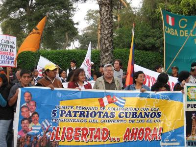

COMITÉ PERUANO DE SOLIDARIDAD CON LOS 5
COMITÉ PERUANO DE SOLIDARIDAD CON LOS 5.
Lima, 22, Agosto (PL).
La falta de autoridad moral de Estados Unidos, denunciaron destacadas personalidades peruanas, al repudiar la inclusión de Cuba en la lista elaborada por Washington, de países promotores del terrorismo.
En declaraciones a Prensa Latina, el parlamentario socialista Javier Diez Canseco, el poeta Hildebrando Pérez y el periodista y luchador social Gustavo Espinoza, se solidarizaron, al mismo tiempo, con el rechazo cubano a esa actitud estadounidense.
“¿Qué autoridad moral puede tener Estados Unidos para imputar terrorismo a otros después de invasión a países como Afganistán, Irak y Panamá?”, añadió Diez Canseco, al subrayar la hipocresía de Washington. Diez Canseco mencionó entre los crímenes norteamericanos, los secuestros internacionales, las prisiones inhumanas en Guantánamo -territorio cubano ocupado ilegalmente-, las ejecuciones ilegales y el uso de armas químicas.
“La administración norteamericana muestra patéticamente su desvergonzaba actitud ante la conciencia del mundo, al volver a una retórica que ya nadie le cree y que, por el contrario, la desenmascara”, dijo el poeta Hildebrando Pérez, Premio Casa de las Américas.
Señaló que mientras el capitalismo salvaje con acciones represivas en Chile, Londres y otras partes del mundo, “Cuba es un ejemplo de dignidad, de coraje y de soberanía que se levanta en Nuestra América”.
Espinoza calificó de cínica y ridícula la inclusión de Cuba como país promotor del terrorismo, cuando la isla “ha soportado durante más de 50 años las práctica terroristas” con las que el gobierno norteamericano ha pretendido castigar y humillar al pueblo cubano.
El periodista preside el Comité Peruano de Solidaridad con los Cinco antiterroristas cubanos encarcelados desde hace 13 años injustamente en Estados Unidos y señaló que mantener presos a los cinco evidencia la falta de autoridad moral de Washington para hablar de lucha antiterrorista.
Señala también la protección de Estados Unidos a los terroristas internacionales Luis Posada Carriles y Orlando Bosch, confesos autores de la voladura de un avión cubano de pasajeros en 1976. Según Espinoza, Washington “alienta a grupos sediciosos en la isla, paga agentes asesinos, financia atentados, protege escuadrones de la muerte en diversos confines del planeta y ataca con perfidia aldeas civiles en diversos continentes”.
JORNADA DE SEPTIEMBRE POR LOS 5
La jornada de septiembre por lo 5 se cumplirá en el Perú a través de diversas acciones. Puntos centrales previstos serán:
LUNES 5 DE SEPTIEMBRE. Los 5 x los 5, correspondiente al mes de septiembre. Tendrá lugar a las 7 de la noche en sede por confirmar
MARTES 6 DE SEPTIEMBRE. Conferencia de Prensa en la Sala Mohme del Congreso de la República, bajo el auspicio de la Liga Parlamentaria de Amistad Perú-Cuba
SABAD0 10 DE SEPTIEMBRE. Marcha popular que partirá de la Plaza 2 de Mayo hasta llegar al Parque Washington en la cuadra 5 de la Avenida Arequipa
VIERNES 16 DE SEPTIEMBRE. Acto central de la Jornada. Hemiciclo Porras Barrenechea del Congreso de la República. 5 de la tarde
MARTES 27 DE SEPTIEMBRE. Conversatorio Jurídico. Auditorio José León Barandiarán, del Colegio de Abogados de Lima, con la participación de su Decano, Dr. José Antonio Ñique de la Puente.
DOMINGO 9 DE OCTUBRE. Gran Festival Artístico Cultural. Parque de La Muralla, desde las 12 del día hasta las 6 de la tarde, con la participación de destacados y consagrados artistas peruanos y cubanos.
Al mismo tiempo se desarrollará una gran ofensiva en Lima y el interior del país para conseguir firmas de adhesión a la causa de los 5 y remitir mensajes al gobierno de los Estados Unidos de Norteamérica haciendo conocer la voluntad de los peruanos de perseverar en esta lucha.
Ya están en circulación los planillones correspondientes, que deben ser firmados con nombre y apellido completos, además de la firma pertinente y el número del DNI.
En las reuniones de los días jueves a las 6 de la tarde en Jesús María, ajustamos los mecanismos de aplicación del plan de trabajo concordado para el periodo
Lima, 24 de agosto del 2011
 Palabra del Mundo
Palabra del Mundo Red Nuestra América de Festivales Internacionales de Poesía
Red Nuestra América de Festivales Internacionales de Poesía